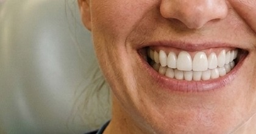

Arquitetura concebida para acolher.
Precisão clínica planejada para transformar com calma e bem-estar.
Tecnologia 3D e cerâmicas nobres.
Diagnóstico computadorizado e lentes com precisão microscópica.
Inspecione a arcada cerâmica em 360°. Cada ângulo, cúspide e linha gengival são calculados para um resultado bioestético perfeito.
Precisão milimétrica planejada em 3D para um encaixe natural, preservando ao máximo a estrutura dental sadia e harmonizando com os traços do seu rosto.
Unimos protocolos clínicos internacionais a uma arquitetura humanizada para que seu tratamento seja previsível, rápido e acolhedor.
Elimina as moldagens com massa desconfortável. Captura digital rápida com precisão micrométrica da sua arcada.
Simulação estética computadorizada. Você valida e aprova o desenho do seu novo sorriso antes de iniciar o procedimento.
Porcelanas nobres importadas de alta resistência e translucidez idêntica ao esmalte dental natural. Sem aspecto artificial.
Ambiente planejado com marcenaria acolhedora, aromaterapia e anestesia computadorizada sem dor.
Do primeiro contato à lapidação final: 3 etapas claras e confortáveis.
Mapeamento digital da mordida e análise estética facial com escâner de alta resolução. Avaliamos a saúde da gengiva e traçamos o plano sob medida.
Você experimenta uma prévia física do novo sorriso no próprio consultório. Ajustamos proporções, harmonia e alinhamento com a sua total aprovação.
Cimentação definitiva das cerâmicas com precisão microscópica. Polimento bioestético e entrega do novo sorriso pronto para sorrir e mastigar com segurança.
A sutileza dos detalhes: alinhamento milimétrico, textura natural e translucidez cerâmica sem artificialismo.

Estrutura completa com estacionamento próximo e fácil acesso nas cidades de Extrema e Toledo.
Rua João Mendes, 103 - Centro
Extrema - MG • CEP: 37640-000
Horários: Seg a Sex das 08h às 19h | Sáb das 08h às 13h
Telefone: (35) 3435-1690
Atendimento com hora marcada com a mesma tecnologia, conforto e acolhimento da matriz.
Horários: Dias e horários agendados previamente
Atendimento: Central unificada via WhatsApp
Agende sua consulta de avaliação com hora marcada em Extrema ou Toledo. Nossa equipe analisará seu caso com escaneamento digital 3D e acolhimento total.